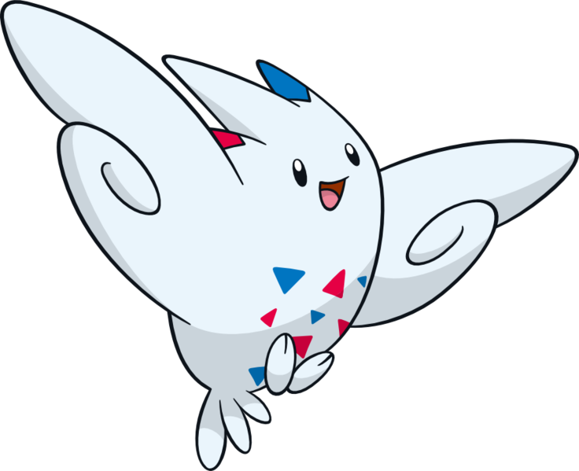

Togekiss' type used to be Normal/Flying. However, when Pokemon X & Y introduced the Fairy type, Togekiss was one of the Pokemon that had one of its types changed. It went from being immune to one type, Ground, to being immune to two types, those being Ground and Dragon. I like Togekiss because it is as strong as it is annoying. Its ability, Serene Grace, doubles the chance for a move's secondary effect to occur. For example, the move Air Slash normally has a 30% chance to make the target flinch, which causes that Pokemon's turn to be skipped. However, if Togekiss uses Air Slash, that 30% chance increases to 60%. The nickname 'Triangles' refers to the triangles on the bodies of Togekiss' evolution line. I wasn't great at coming up with nicknames as a kid.
